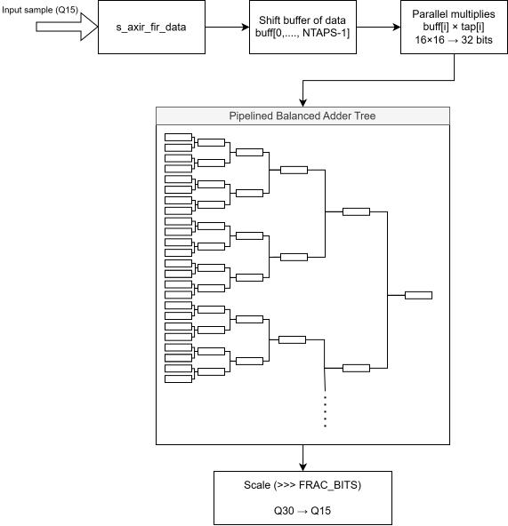
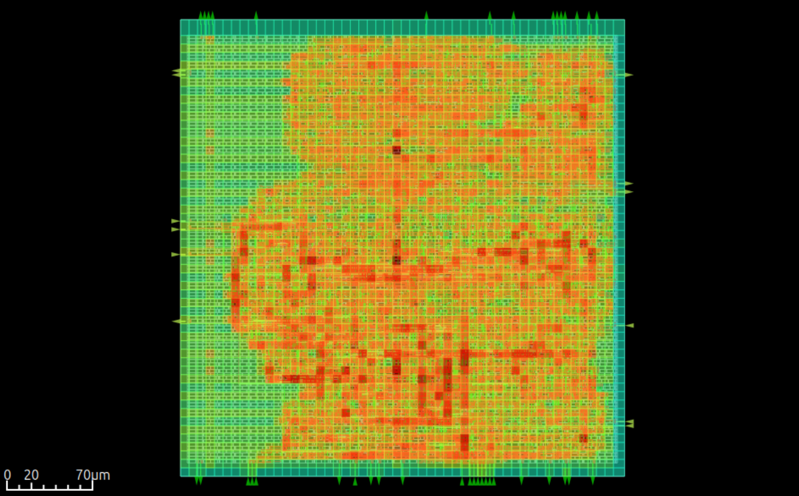
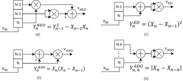
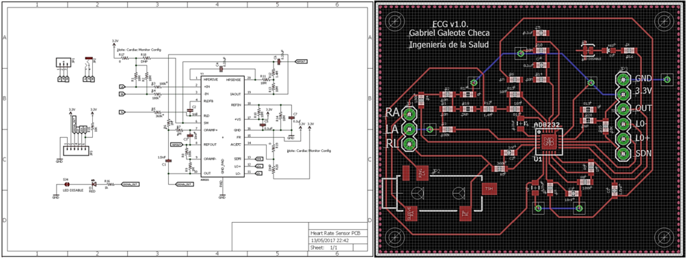
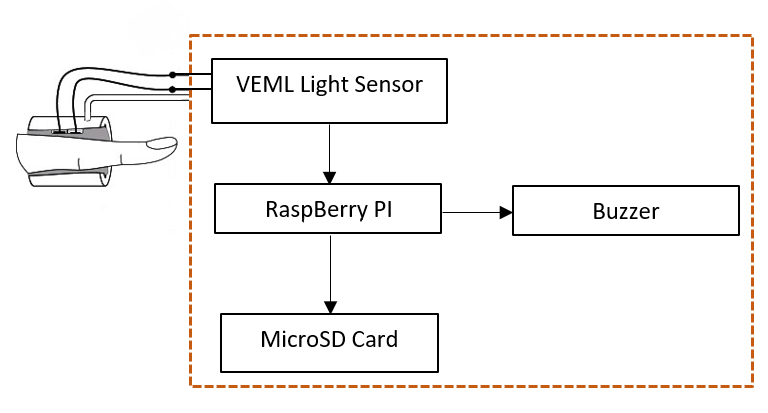
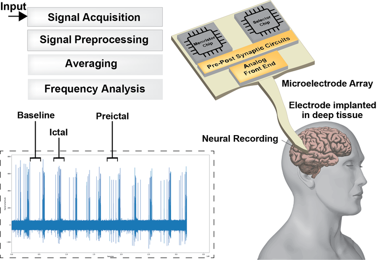
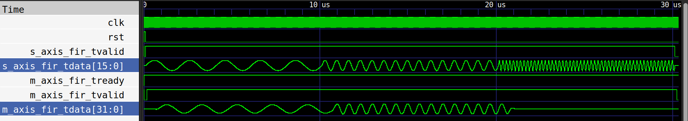
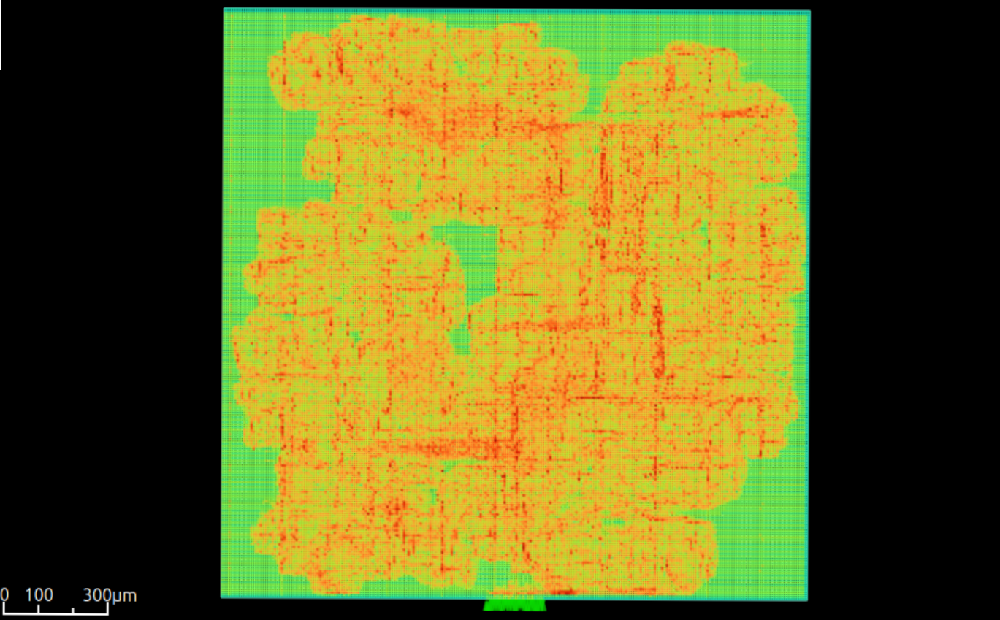
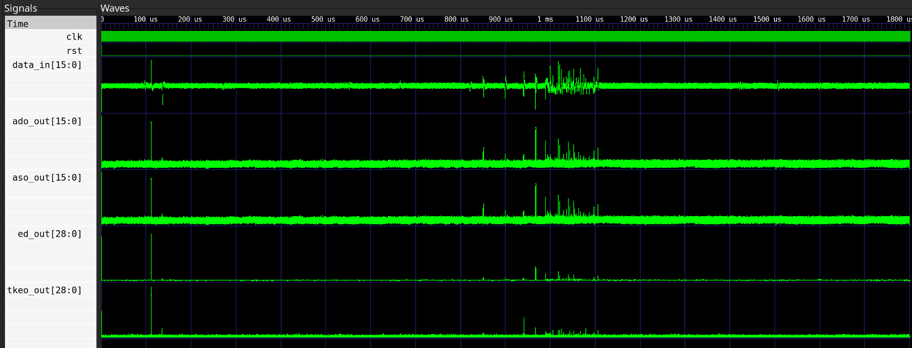
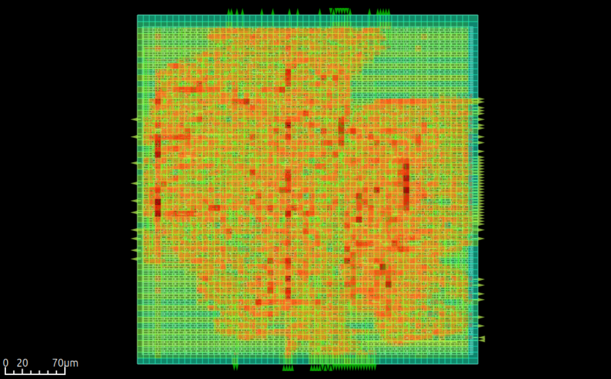

FIR Filter — Adder Tree

Digital Signal Processing engineer and Ph.D. specializing in bioelectronics, neural implants, and ECG signal processing.
My work sits at the crossroads of bioelectronics, medical devices, and signal processing. I focus on developing advanced therapeutic technologies aimed at improving the lives of patients affected by neurological conditions such as epilepsy, leveraging state-of-the-art electronics and signal processing techniques.
In March 2026, I completed my Ph.D. in Physical Sciences and Technology (Microelectronics) at the Instituto de Microelectrónica de Sevilla, Spain. My doctoral research investigated algorithms, circuits, and adaptive systems designed for biological tissue integration, with a primary emphasis on the detection and pattern recognition of epileptic seizures.
This research culminated in the successful synthesis and fabrication of a seizure detection system-on-chip utilizing SkyWater 130nm and IHP 180nm processes, as well as tape-outs leveraging TSMC 65nm low-power and 180nm technologies.
My scholarly contributions include 4 journal articles and 5 conference papers. I have served for more than three years as an international reviewer for IEEE conferences and high-impact journals. I am a member of the IEEE.
Analog Devices Inc.
Senior Signal Processing and Algorithms Engineer (Medical Products) — – Present
Digital Healthcare division, Norwood, MA / Valencia, Spain.
Imperial College London
Visiting Researcher — –
Next Generation Neural Interfaces (NGNI) Laboratory, London, U.K.
Instituto de Microelectrónica de Sevilla
Researcher (Neuromorphic Computing Group) — –
Seville, Spain.
Polytechnic University of Madrid
Research Assistant — –
Madrid, Spain.
University of Glasgow
Research Scholar (Microelectronics Lab — MeLab) — –
Glasgow, United Kingdom.
You can also find my articles on Google Scholar and ORCID.
FIR Filter — Adder Tree

Neural Time-Series Segmentation

Non-Linear Signal Operators

Portable ECG with Arduino

Stress Controller

Brain Implantable Device

Instituto de Microelectrónica de Sevilla
Ph.D. in Physical Sciences and Technology, Microelectronics — –
University of Glasgow
MSc in Mechatronics, Electronics Engineering — –
Incheon National University
International Scholarship (GPA: 4.00 / 4.00) — –
Universidad de Málaga
Bachelor of Science in Biomedical Engineering (GPA: 3.23 / 4.00) — –
Portable ECG with Arduino
Design and fabrication of a portable ElectroCardioGraph (ECG) controlled by Arduino and signal processing for heartbeat detection. This project was a prototype of ECG using an AT-Mega (Arduino) processor, performing acquisition and signal processing of an ECG signal with an AD8231 analog front end.
Carried out the full design, from conceptualization, PCB design (KiCad/Eagle), firmware development, algorithm implementation (Pan-Tompkins), and fabrication.
Stress Controller
Real-Time embedded system using an ATMega and VEML3060 sensor to monitor the stress level of patients with anger control difficulties.
This project consisted of the development of a plethysmography-based stress controller that monitors the stress level of an individual through Heart-Rate Variability (HRV) during any task — although in this project we focused on videogames.
Brain Implantable Device
Design and fabrication of a stretchable and miniaturized brain implantable device following a modular structure approach. Implemented stages include antenna, conditioner circuit, and shank.
The implant was fabricated using a flexible substrate of Polyimide (DuPont Pyralux AP8535R) and encapsulated by PDMS for chronic implantation. Wireless power transmission through RF techniques, simulation in HFSS and COMSOL, and fabrication over a flexible PCB substrate using optoelectronic techniques.
Published in 2 IEEE conference papers and 1 journal paper. View publication
FIR Filter — Adder Tree Optimization


RTL implementation and verification environment for an optimized FIR filter architecture targeting low-power and efficient VLSI designs. The project focuses on optimizing a classic FIR filter using adder-tree based accumulation, pipelining, and area-aware design decisions.
Key features include a balanced adder tree reducing the critical path by summing partial products in a log-depth tree, inferred clock gating for reduced switching activity and dynamic power, and an optimized 10-cycle latency (down from 16) with full pipelining.
The design is compatible with Icarus Verilog, Verilator, standard synthesis flows, and ASIC synthesis via the Librelane flow targeting SkyWater 130nm.
Neural Time-Series Segmentation
Verilog implementation of an efficient, on-device spike detection and time-series segmentation system for high-density neural implants. Designed for low-latency, low-power operation suitable for implantable hardware.
The core logic implements a lightweight algorithm for detecting epileptic spikes in multichannel neural recordings. Key components include hardware feature extractors (NEO, ABS, ASO, ADO, Z-Score methods) and a heuristic rule-based classifier for event detection.
Synthesizable for both FPGA (targeting Zynq 7020) and ASIC (SkyWater 130nm via Librelane). Verified using both standard Verilog testbenches and Python-based Cocotb verification.
Non-Linear Signal Operators


RTL implementations and verification suite for non-linear signal processing operators — TKEO, ED, ASO, and ADO — designed for SNR enhancement of noisy signals such as Local Field Potential (LFP) and EEG recordings.
Unlike linear filters, these operators use non-linear transformations to emphasize transients, track instantaneous energy, and detect spikes, making them ideal for real-time neuromorphic sensing and low-power VLSI feature extraction.
Features a parallel architecture for simultaneous processing, fully pipelined RTL optimized for high-frequency FPGA/ASIC synthesis, and configurable bit-widths with Q-format support. Includes ASIC synthesis via Librelane targeting SkyWater 130nm.